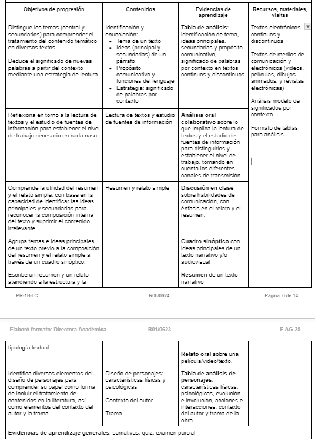

Materias de Repaso
Inicio
Materias
Atrás
Selecciona un tema de repaso
Identificación y enunciación
Lectura de textos y estudio de fuentes de información
Resumen y relato simple
Diseño de personajes
Aprendizajes esperados
